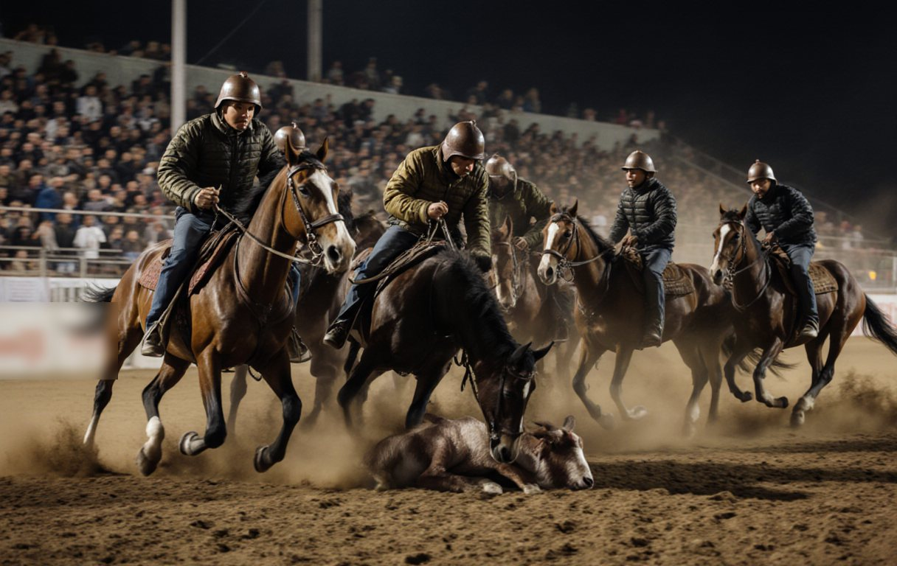

TALAS 7, SARY-BULAK 4: FOUR FROM FOUR AND THE HIPPODROME GOES NUTS

Talas did it again. Four games, four wins, and on Saturday night they made it look easy, beating Sary-Bulak 7–4 in front of 15,200 people at the State Hippodrome, the biggest league crowd of the season.
Captain Adilet Turdumamat uulu scored three, including a monster pick-up at full gallop in the second half that had the north stand on its feet and half of it in the beer. Sary-Bulak hung in for twenty minutes, 3–3 at the break, but the champions-in-waiting ran away with it after half-time.
Over in Semiz, the boys from la Colonia finally got off the mark: 5–5 against Iyık Janyl, their first point of the season. Coach Jesús Villanueva promised they were "losing by less each week". This week they didn't lose at all. Fiesta in Semiz.
And the party? The Aigyr Deck ran out of Aigyr Gold at 22:40 (sorry, legends, the truck is bigger this week), Ozat & the Steppe Rangers played two encores, and the last bus left Club Doran at 05:20. Classic.
Next Saturday: Talas v Kara-Bulak. Five from five? Get your tickets.
COMMENTS (4)
was there, deck ran out of Gold at 22:40, had to drink Light like an animal
4 goals and we still get mocked. the referee was blind in both eyes
real ulak is in the valleys. this is theatre
@Bakyt_ElChoro theatre with 15,200 paying customers bro. see you saturday